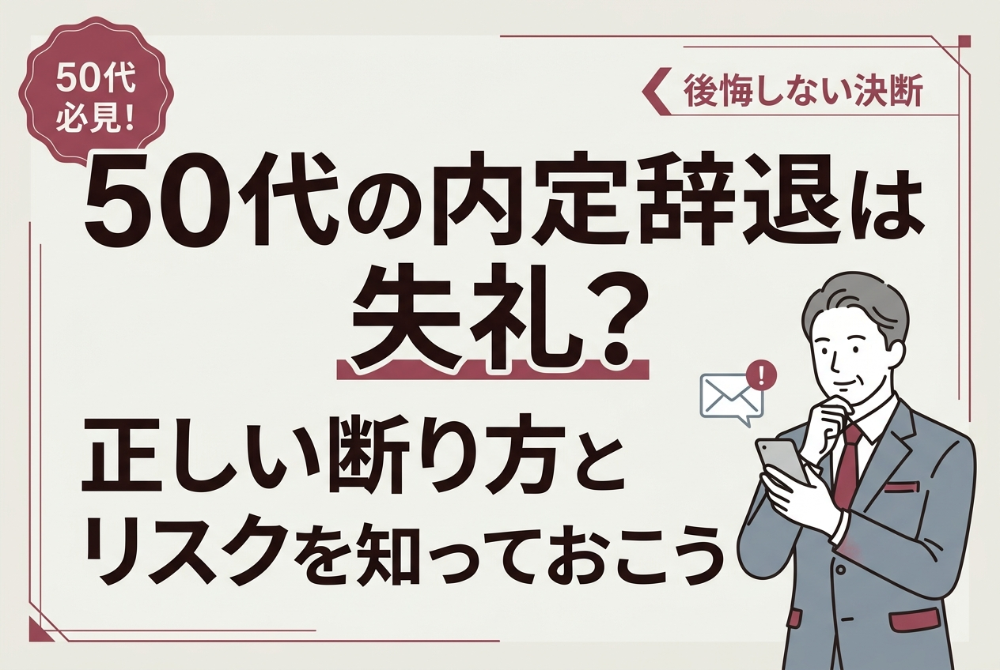
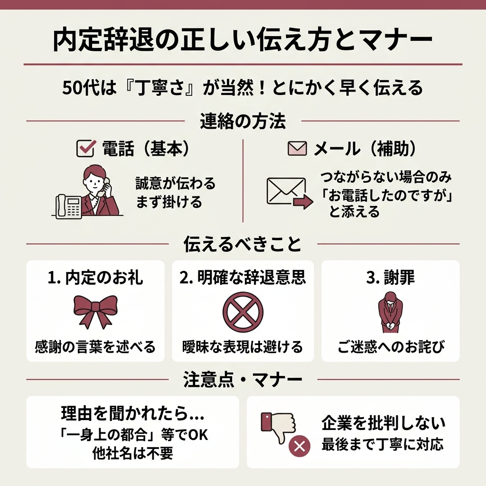
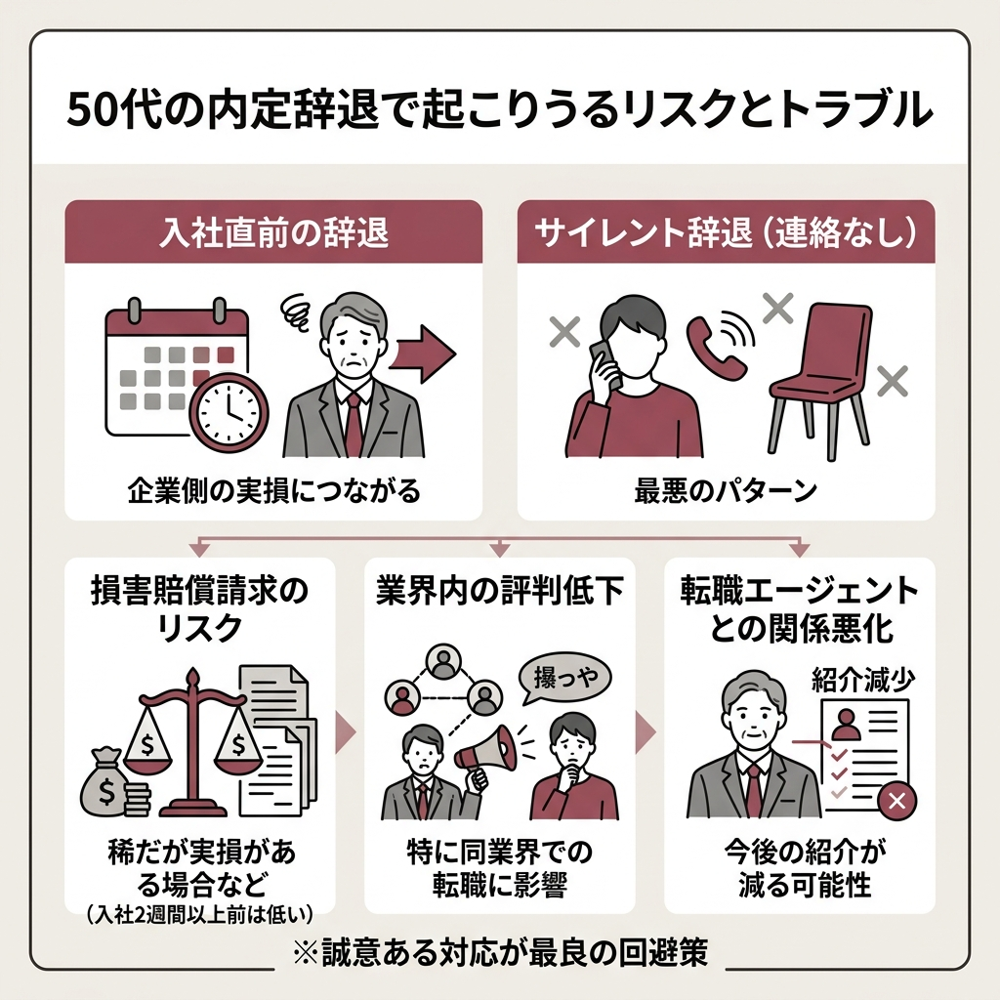
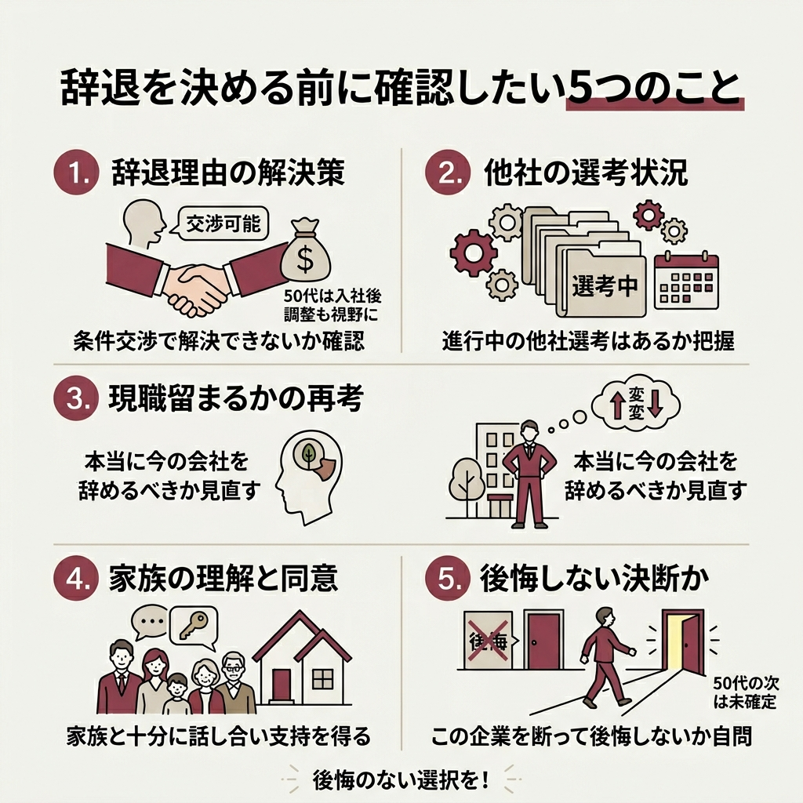

50代の転職活動で内定をもらったものの、「やっぱり辞退したい」と思うことってありませんか。
条件が合わない、他社からも内定が出た、家庭の事情が変わった。理由はいろいろあるんですよね。
ただ、20代・30代と違って50代の転職は選択肢が限られやすいのが現実です。
辞退すべきか続けるべきか、判断のハードルが上がります。
50代で内定辞退なんて、失礼にならないですか？もう後がない気がして怖くて…
法律上は年齢に関係なく辞退できます。ただ50代ならではの注意点があるので、順番に見ていきましょう。
この記事では、50代が内定辞退するときの正しい手順、伝え方、リスク、例文までまとめています。
辞退を迷っている方も、すでに決めた方も、後悔しない判断のヒントにしてみてください。
結論から言うと、50代でも内定辞退は法律上まったく問題ありません。
民法627条1項では、労働者は解約の申し入れから2週間が経過すれば労働契約を解除できると定められています。
年齢による制限は一切ないんですよね。
内定をもらっただけで、まだ承諾していない段階なら辞退は完全に自由です。
この時点では労働契約が成立していないので、法的なリスクはゼロ。
ただし、辞退の連絡は早いほうがいいですよ。
企業側はあなたの入社を前提に準備を進めている可能性があるので、決まった時点ですぐ連絡しましょう。
「内定承諾書に署名・押印したらもう辞退できない」と思っている方、けっこう多いんですけど、これは誤解です。
内定承諾書に法的拘束力はありません。
承諾書を提出しても、入社日の2週間前までに申し出れば辞退は可能みたいです。
採用内定により労働契約が成立したと認められる場合には、その後、内定辞退（労働契約の解約）の申入れをしたときは、申入れの日から2週間を経過することにより、労働契約が終了します。
厚生労働省「確かめよう労働条件」Q&Aより
法律上は問題なくても、50代の転職市場は業界や職種のコミュニティが狭いんですよね。
雑な辞退をすると、思わぬところで評判が伝わることがあります。
転職エージェントを経由している場合は、エージェントとの信頼関係にも影響するので、丁寧な対応が自分の身を守ることにつながります。
いろいろ調べてみると、50代の内定辞退には若手とは違う事情が絡んでいるケースが多いです。
面接を進めるうちに、給与や役職、勤務地が希望と違うとわかることがあります。
中途採用では、条件面の不一致が辞退理由のトップクラスに入るんですよね。
50代の場合、住宅ローンや子どもの学費など固定支出が大きい時期でもあるので、「なんとなく妥協する」のが難しいのが正直なところです。
エン・ジャパンの調査では、中途採用において約半数の企業が「以前より辞退が増えた」と回答しています。
50代でも複数社に応募するのは当たり前の時代です。
先に内定が出た企業を「とりあえずキープ」しておいて、本命企業から内定が出たら辞退する。
これ自体は珍しい話ではないですよ。
親の介護が始まった、自分の体調に不安が出てきた。
50代はこうした予期しない変化が起こりやすい年代でもあります。
転職活動中に状況が変わって、辞退せざるを得なくなるケースは決して珍しくありません。

辞退すると決めたなら、とにかく早く連絡する。これが鉄則です。
50代ともなれば社会人経験が豊富なぶん、対応の丁寧さが「当然」と見られます。
若手なら許されるような粗さも、50代では目立ちやすいんですよね。
内定辞退の連絡は電話が基本です。
メールは「電話がつながらなかったときの補助」という位置づけで考えてください。
電話のほうが誠意が伝わりやすいですし、採用担当者の中にはメールでの辞退を失礼と感じる人もいます。
電話が苦手で…メールじゃダメですか？
気持ちはわかりますが、まずは電話を。つながらなければメールで「お電話したのですが」と一言添えると丁寧な印象になりますよ。
辞退の電話で必ず伝えるのは次の3つだけです。
まず内定をいただいたことへの感謝を述べます。
「辞退させていただきたい」と明確に伝えます。曖昧な表現は避けてください。
ご迷惑をおかけすることへのお詫びを伝えます。
辞退理由は聞かれたら答えればOK。
ただし、相手企業を下げるような発言は絶対にやめましょう。
「他社に決めた」「一身上の都合」くらいの説明で十分ですよ。
実際に何を話せばいいのか、具体的な例文を紹介します。
棒読みにならないように、自分の言葉にアレンジして使ってくださいね。
「お世話になっております。先日内定のご連絡をいただきました○○と申します。採用担当の○○様はいらっしゃいますでしょうか。」
（担当者に替わったら）
「先日は内定のご連絡をいただき、誠にありがとうございました。大変心苦しいのですが、検討の結果、今回は内定を辞退させていただきたくご連絡いたしました。選考にお時間をいただいたにもかかわらず、申し訳ございません。」
承諾後の辞退は、より丁寧な対応が求められます。
承諾書を提出した後なら、電話に加えて手紙でのお詫びも検討したほうがいいでしょう。
「お世話になっております。○○と申します。先日は内定をいただき、誠にありがとうございました。内定承諾書を提出させていただいた後で大変恐縮なのですが、一身上の都合により、内定を辞退させていただきたくご連絡いたしました。」
「御社には選考の段階から大変お世話になり、ご迷惑をおかけすることとなり心よりお詫び申し上げます。」
理由を聞かれたときは、嘘をつく必要はありません。
「他社で内定をいただき、最後まで悩んだ結果そちらに決めました」「家庭の事情で転職そのものを見送ることにしました」など、正直に伝えるほうが相手も納得しやすいです。
何度か電話してもつながらない場合は、メールで連絡しましょう。
「先ほどお電話させていただきましたが、ご不在でしたのでメールにて失礼いたします」と一言添えるだけで印象が変わります。
件名：内定辞退のご連絡／○○（氏名）
株式会社○○ 人事部 ○○様
お世話になっております。先日内定をいただきました○○です。
先ほどお電話いたしましたが、ご不在でしたのでメールにてご連絡させていただきます。
大変心苦しいのですが、検討を重ねた結果、今回は内定を辞退させていただきたく存じます。
選考にお時間をいただいたにもかかわらず、このようなご連絡となり誠に申し訳ございません。
末筆ながら、貴社の一層のご発展をお祈り申し上げます。
電話で辞退を伝えた後に、改めて手紙を送るという方法もあります。
正直、ここまでする人はそう多くないので、かなり丁寧な印象を与えられます。
特に紹介者がいる場合や、選考で何度もお世話になった場合は検討する価値がありますよ。
手書きのお詫び状は、ビジネス用の白い封筒に縦書きまたは横書きで。
辞退理由の詳細は書かず、お詫びと感謝に絞るのがマナーです。

辞退を決めたときに気になるのが、「トラブルにならないか」という点ですよね。
入社日の2週間以上前に辞退していれば、損害賠償が発生する可能性は基本的に低いです。
これは民法で認められた労働者の権利なので、合法的に辞退している限り問題ありません。
ただし、入社を前提に会社負担で研修を受けていた場合は、費用の返還を求められることがあるみたいです。
また、入社日まで2週間を切ってから辞退すると話が変わってきます。
企業側がすでに備品を発注していたり、他の候補者を断っていたりする場合は、損害賠償のリスクがゼロとは言い切れません。
50代で同じ業界内での転職を考えている場合、これがいちばん怖いかもしれません。
採用担当者同士が知り合いだったり、業界の集まりで話題に出たり。
狭い世界で「あの人、直前で辞退した」という噂が広がると、次の転職に響きかねません。
だからこそ、辞退するならできるだけ早く、誠意をもってが鉄則なんですよね。
エージェント経由で紹介された企業の内定を辞退する場合、まずエージェントに連絡するのが筋です。
企業に直接連絡する前に、エージェントに事情を説明してください。
理由なく辞退を繰り返すとエージェントからの紹介が減る可能性はありますが、正当な理由があれば問題ないですよ。
辞退の際にトラブルが心配な方は、こちらの記事も参考にしてみてください。

辞退してから「やっぱり取り消したい」と思っても、基本的に内定辞退の撤回は認められにくいです。
後悔しないために、以下の5つを自分に問いかけてみてください。
特に50代だと、次の内定がいつ出るかわからないのが現実です。
給与や勤務地に多少の不満があっても、入社後に調整できる余地がないか確認してみるのも手ですよ。
条件に不満があるんですけど、交渉してもいいんでしょうか？
内定後の条件交渉は珍しくありません。辞退する前に「ここだけは変えてほしい」と率直に伝えてみる価値はあると思いますよ。
辞退のタイミングを迷っている方は、こちらの記事もチェックしてみてください。
辞退自体は問題なくても、やり方を間違えると取り返しがつかなくなります。
連絡もなしに辞退する、いわゆる「サイレント辞退」。
これは年齢を問わず最悪の対応ですが、50代でやったら致命的です。
企業は入社を前提に準備を進めているわけですから、連絡がないと混乱します。
気まずくても、一本電話を入れるだけで全然違いますよ。
「御社の面接官の態度が悪かった」「給与が低すぎる」。
こういった直接的な批判は、たとえ事実でも辞退の場で口にすべきではありません。
「検討の結果、別の道を選びました」くらいに留めておくのが大人の対応です。
迷うのは仕方ありません。
でも、何週間も返事を保留にし続けるのは企業に大きな迷惑がかかります。
回答期限を確認し、その範囲内で結論を出すようにしましょう。
辞退するのが怖いと感じている方は、こちらの記事も参考になるかもしれません。
ここまで辞退の方法について書いてきましたが、50代の転職市場の現実も知っておくべきです。
リクルート就職みらい研究所の調査によると、2025年卒の内定辞退率は65.1%。
これは新卒のデータですが、中途採用でも辞退は増加傾向にあります。
つまり「内定辞退は特別なことではない」のが今の転職市場なんですよね。
20代・30代なら辞退しても次がすぐ見つかることが多いですよね。
でも50代は求人自体が少なく、選考に通るまでのハードルも高い。
辞退した後に「やっぱりあの会社にしておけばよかった」と後悔する人も少なくないのが正直なところです。
だからこそ、安易な辞退は避けて、本当に辞退すべきかを冷静に見極めるのが大事です。
とはいえ、条件が合わない会社に無理やり入社して、数ヶ月で退職するほうがキャリアへのダメージは大きいです。
50代の短期離職は次の転職で不利になりやすいですし、精神的にもきつい。
合わないと確信があるなら、辞退する勇気も必要だと思います。
| 判断軸 | 入社を選ぶ場合 | 辞退を選ぶ場合 |
|---|---|---|
| 条件面 | 概ね希望に近い | 大きく乖離している |
| 次の選考先 | 他にない | 他に進行中の企業あり |
| 体調・家庭 | 問題なし | 不安要素がある |
50代の転職活動で内定辞退を経験するのは、決して特別なことじゃないです。
合わない会社に無理して入社するくらいなら、正直に辞退するほうがお互いのため。
ただ、辞退のやり方だけは間違えないようにしたいですね。
電話一本の対応で、その後のキャリアの印象が変わると思っています。